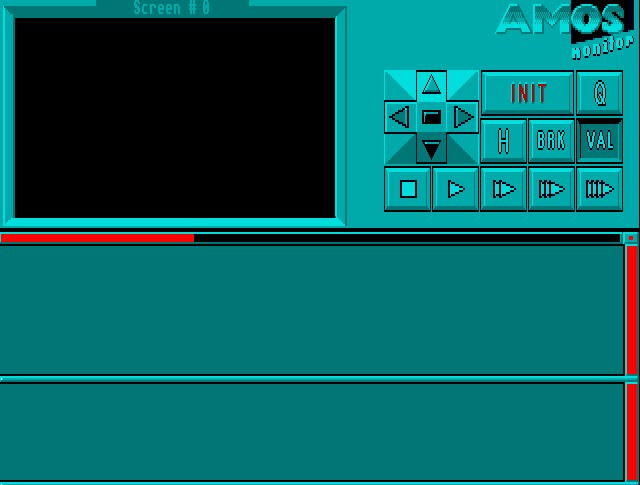
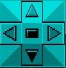
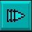
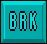
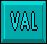
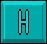
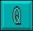

This User Guide can help you to overcome most problems in your programming, and the ready-made HELP programs will demonstrate all of the techniques described in its pages. But a User Glide can never get inside your own programs and explain what is going on. Believe it or not, AMOS Professional can!
The AMOS Professional Monitor is a very simple idea, but it is also incredibly powerful. It may summoned up to examine any AMOS Professional routine, or even a single expression. The Monitor is used to find out exactly what is happening and why, and to make an instant report on screen.
To call up the AMOS Professional Monitor from the Editor, simply click on the [Monitor] option in the Project Menu, or press the [F5] key.
instruction: call AMOS Professional Monitor
Monitor
MONITOR is also a command in its own right, and can be typed from Direct Mode or included anywhere in your program listing. When called from inside an AMOS Professional program, the MONITOR command stops the program and summons up the Monitor Screen. The monitoring process will then start from the location immediately after the MONITOR command, ready to step through the program one instruction at a time. For example:
Print "Time to call the Monitor!"
Wait 100
Monitor
Print "This is the next instruction"
Before the next instruction is executed, the Monitor Screen appears, and the system is ready to be exploited.
The AMOS Professional Monitor is totally icon-driven and controlled by the mouse, so there is no need to type anything at all! To prepare for a step-by-step guide of the Monitor, you are recommended to load one of the demos on the AMOSPro Examples disc, so that the Monitor can analyse it.
If the Monitor screen is displayed, click on the quit icon [Q] in the top right-hand corner of the push-button control keypad of the Monitor Screen, and load the following example now:
LD> Load "AMOSPro_Examples:Examples/H-0/Help7.AMOS"
Run the example from the Editor, to remind yourself how it looks, then break into it with [Ctrl]+[C] and press [Spacebar] to return to the Editor.
Now trigger the [Monitor] option or press [F5], and the Monitor Screen will appear looking something like this:
The AMOS Professional Monitor has been designed to perform all of the following tasks:
The Monitor screen is divided into four areas, as follows:
The window that occupies the top left-hand quarter of the Monitor Screen displays the graphic output of the current program screen. The screen number is displayed above it. Lowres screens are reduced to exactly half of their original size, so that a 320x200 screen fits perfectly into this window. If the screen is larger than this default size, it can be explored using the four directional arrow icons in the push-button control panel. Hires screens are not reduced, and these are also examined using the direction arrows.
All colour animations, including FLASH and FADE will be shown during the monitoring process. If the current screen features more than 16 colours, then colours 16 to 31, colours 41 to 47 and colours 48 to 63 will each be converted to colours 0 to 15. Obviously HAM pictures may well generate some bizarre displays.
Experiment with the directional arrows, and then click anywhere in the graphic output window with the left mouse button. This returns to the original program display for as long as the button remains pressed, and is a useful feature to-remind you of exactly what is on the screen you are dealing with.
This window gives you a view of the current program listing. Any items to be examined can be marked out, but nothing in this window can be changed. Once the Monitor has been initialised, helpful markers will be shown in the program listing, acting as reminders for the following points:
This is where all of the Monitor information appears. It commences by displaying the next instruction to be examined, but as more of the Monitor features become active, information is displayed in the following order, from top to bottom in this window:
Scroll bars are provided to move the display of the program listing, vertically and horizontally in the Program Listing Window. The "centre" button at the top right-hand corner of this window is used to centre the display on the next instruction to be executed. A vertical scroll bar is also available for the Information Window.
The horizontal line between the Program Listing Window and the Information Window can also be dragged up and down, in order to enlarge one of these windows and reduce the other to a minimum of three lines.
Each of the push-buttons in the control keypad is triggered via the mouse. Here is au explanation of the controls.
Scrolling the screen output

The four directional arrows are used to scroll the reduced screen in the graphic output
window. The central button in this group selects the screen to be displayed, starting
from screen zero, and then in order through any additional screens until screen zero is
displayed once more.
Initialising the Monitor
This is the Initialisation button, and it has exactly the same effect as using [Run] from
the Editor.
Firstly, a [Test] of the program is performed. If AMOS Professional encounters an error, the faulty line will be displayed in the program listing window. If the testing process is successful and no errors are found, a Default command will be given and a program pointer will be initialised at the first instruction in the program that is being monitored.
The [INIT] button must be triggered before the program listing can be checked, step by step.
One-Step Control
Clicking on this button tells the Monitor to examine the next instruction, give a report and
then go back and wait for your next action. The black program cursor will now be pointing
to the next instruction, and the Information Window will also show the next instruction and
give any parameter list.
Slow-Run Control
When this button is triggered, the Monitor will interpret instructions one at a time, and re-
draw the whole display after each examination. By using this option, you can follow the
progress of the program listing in slow motion. To stop the slow-run, click on the stop button.
Stop Button
The stop button brings the interpretation process to a halt, and returns you to the Monitor.
Pressing [Ctrl]+[C] has the same effect, and so does a "break point", which is explained
below. If a non-trapped error is discovered, it will be displayed in the Information Window and
you will also be taken back to the Monitor.
Normal-Run Control

This button will run the program from the Monitor and update the graphic display every
50th of a second, allowing a faster speed of operation. The program itself and the Monitor
information windows will not be updated until a stop in the program. To stop the process,
simply use the stop button.
Fast-Run Button
When fast-run is used, the program's own display is used and the program is run at full
speed. If an error is not found, the only way to return to the Monitor during a fast-run is to
press [Ctrl]+[C], or use break points.
Break Point Button

Click on the break point button with the left mouse button as usual, then click on the
instruction in the program listing wherever you wish to set the break. The instruction will
be highlighted in inverse video. To remove a break point, click on an area which is adjacent to
the highlighted listing, such as the area without any commands or text to the right of the
program lines.
Evaluation Button

The button marked [VAL] allows you to use a very accurate setting for the evaluation
process. Click on the button and then use the mouse to set the individual character that
marks the beginning of the expression to be evaluated. With the button held down, drag it to
the character in the listing to mark the end of the expression you are interested in, and release
the button to underline the expression. The evaluation will now be reported in the Information
Window.
Help Button

Click on the help button [?], then click on the instruction you need help with. The
keyword will be underlined, and the trusty AMOS Professional Help Window will appear,
at your service.
Quit

This button takes you back to the Editor. If the Monitor system has been called up from
inside a program using the MONITOR command, you will be returned to the program at
the instruction immediately after that command.
The Monitor may be simple to use, but it is incredibly skilful in the way it analyses expressions, and reports the results back to you. here are the ground rules for a simple demonstration. First, run this example to give yourself something to work on, and then call up the Monitor.
A=1 : B=2 : C=3
D=A+B*C-1
Print D
Initialise the program by clicking on the [INIT] button. If you were to press [VAL] and ask for an evaluation of A+B without first initialising B, you would be asking for the impossible. Also, if you asked for an evaluation of "k", you would be told that it is not possible to evaluate something that is plainly idiotic! On the other hand, if you ask for an evaluation of something self evident, like "1", it will be given. Also, the expression must be at the same level of procedure as the program pointer.
With the black program cursor still on the first line of the example program, trigger [VAL] and ask for an evaluation of D by clicking on "D" in the last line of the example. The result of zero will be given! D will only be equal to A+B*C-1 when all the expressions have been evaluated.
Advance the process by one step by pressing the appropriate one-step button on the control panel, and the cursor moves to the next expression on the first line. Now advance two more steps, and get the correct evaluations for A,B and C, from the second line of the program. D will still come back as zero, but by advancing another step, D is given as 6.
To get rid of an expression from the Information Window, just click on it with the mouse cursor.
That was a very simple example, of course. However, when dealing with complex programs, you can use the Monitor with the greatest of ease to extract all sorts of interesting results from the expressions in the listing. Explore one of the AMOS Professional example programs now, and test out the Monitor on the most complex expressions you can find.